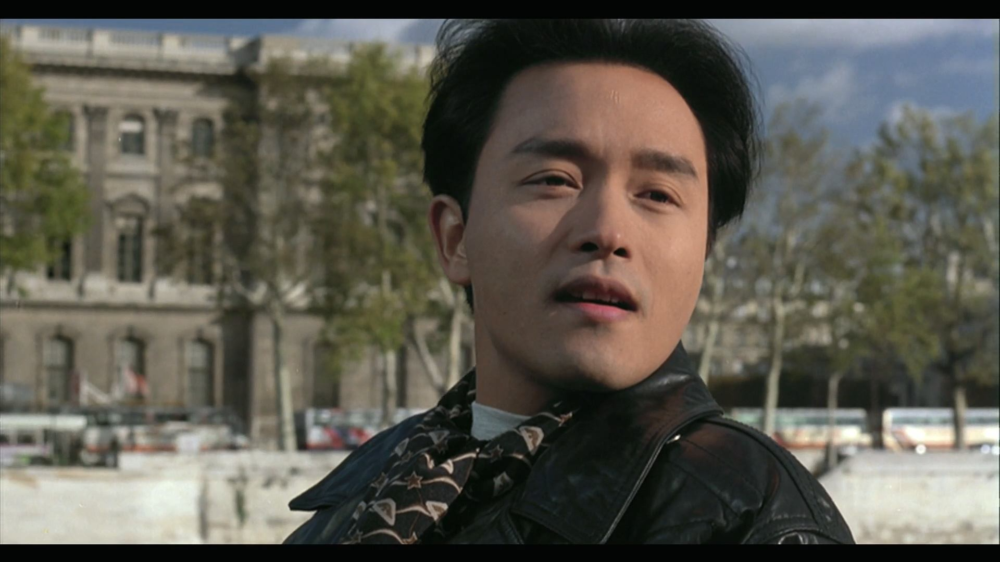
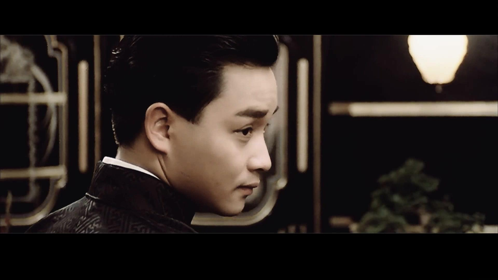
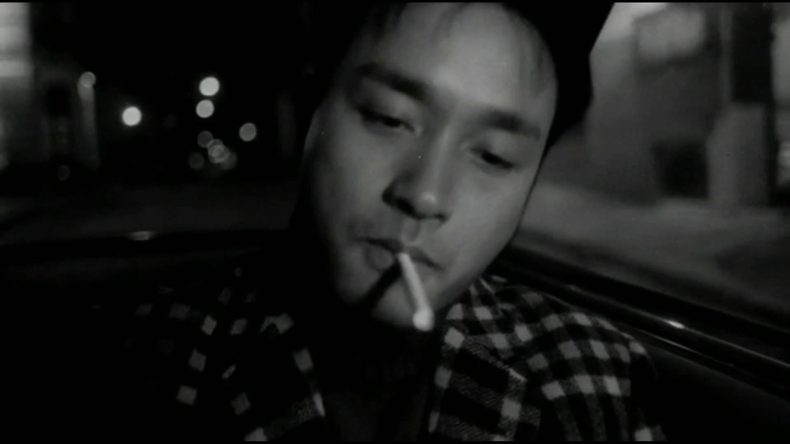
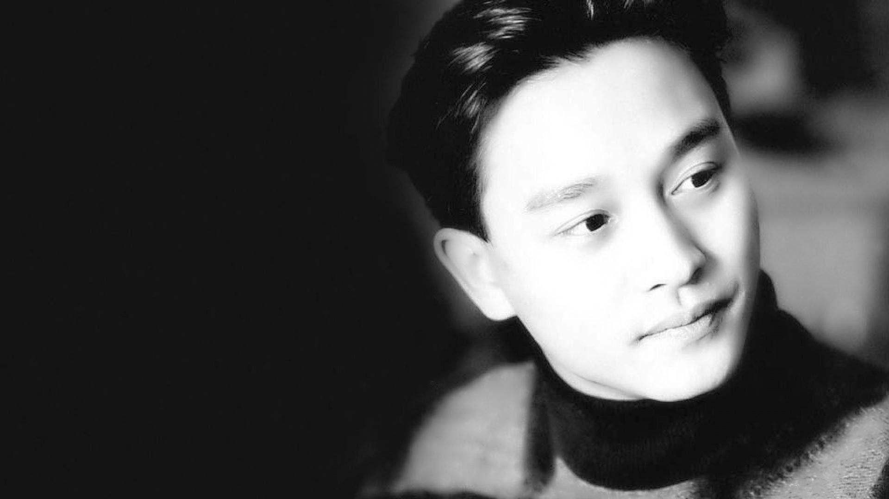
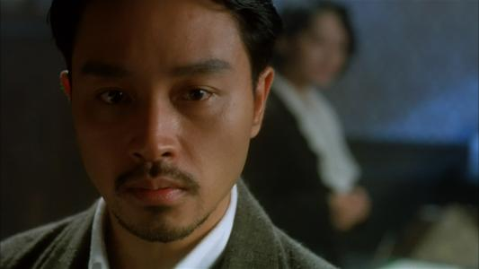

张国荣
英文名 Leslie
Cheung，（1956年9月12日－2003年4月1日）生于香港，著名歌手、影星、词曲创作音乐人，演艺圈多栖发展最成功的代表之一，在中国大陆地区拥有广泛影响力，曾担任唱片监制、演唱会艺术总监、配乐、剪辑师、电影编剧、电影导演和电影监制。
重要事件
- 1980年，在韩国取得高知名度，是第一位享誉韩国乐坛的华人歌手。1987年，专辑《爱慕》在韩国空前大卖20万张，1995年，专辑《宠爱》香港本地销量33万张（六白金），韩国销量超过50万张，至今仍保持华语唱片在韩国的销量纪录。
- 1984年至1989年与谭咏麟并称香港两大男歌手，成为香港1980年代乐坛巨星。
- 1988年获邀担任美国百事亚洲代言人，与同期美国代言人麦可·杰克逊属第一代百事巨星。
- 1988年至1989年十大劲歌金曲颁奖典礼和叱吒乐坛流行榜颁奖典礼，连续两届夺得最受欢迎男歌星和叱吒乐坛男歌手金奖，而于歌唱事业高峰，张国荣宣布告别乐坛，就此退休，成为香港第一位在事业如日中天时，选择急流勇退的歌手。
- 1991年凭《阿飞正传》成为第十届香港电影金像奖影帝。1993年凭《霸王别姬》蜚声国际影坛，获得法国戛纳影展最佳男主角提名，日本影评人协会最佳男主角奖。本片亦获得法国戛纳影展金棕榈大奖；美国金球奖最佳外语片和美国奥斯卡金像奖最佳外语片提名。
- 1999年，获得香港乐坛最高成就奖：十大中文金曲颁奖典礼颁发香港乐坛最高荣誉大奖“金针奖”；十大劲歌金曲颁奖典礼“荣誉大奖”，并于2000年十大劲歌金曲颁奖典礼获颁“致敬大奖”。
成就和荣誉
- 1980年，他以电视短剧《我家的女人》获得英联邦电影电视节最佳表演奖。
- 1978年，推出英语正规唱片《Day Dreamin'》。
- 1979年，推出首张粤语唱片《情人箭》。
- 1983年，推出唱片《风继续吹》，与唱片同名的粤语主打歌，成为香港家喻户晓的名曲。
- 1984年，收录于唱片《Leslie》中的主打歌《Monica》一曲发行，从此红透香港，香港本地销量一举突破20万张（四白金）;并首夺十大中文金曲和十大劲歌金曲的金曲奖。
- 1985年，于香港红磡体育馆连开10场张国荣百爵夏日演唱会，打破香港歌手初次开演唱会的场数纪录。
- 1987年，张国荣转投新艺宝唱片，大碟《Summer Romance》销量达到七白金，此一唱片成为当年IFPI香港唱片销量冠军，夺得全年销量冠军大奖。
- 1989年，张国荣再度获得十大劲歌金曲颁奖典礼颁发最受欢迎男歌星奖以及叱吒乐坛流行榜颁奖典礼颁发叱吒乐坛男歌手金奖，同时他当选由韩国主办的亚洲十大最受欢迎艺人。
- 1988年至1989年十大劲歌金曲颁奖典礼连续两届夺得最受欢迎男歌星。
- 1988年至1989年叱吒乐坛流行榜颁奖典礼连续两届夺得叱吒乐坛男歌手金奖，是首位连续两年同时获得这两项大奖的香港歌手。
- 1989年，张国荣作为唯一的香港歌手代表，参加于英国举行的亚洲流行音乐节。
- 1980年代至1990年代，张国荣在影坛同样取得辉煌成就，主演多部著名电影，从影20年,先后八次获得香港电影金像奖最佳男主角提名，并五度入围台湾电影金马奖最佳男主角。
主要作品
| 年份 |
专辑名 |
| 1977年 |
I like Dreaming |
| 1978年 |
Day Dreamin' |
| 1983年 |
一片痴、风继续吹 |
| 1984年 |
Leslie |
| 1985年 |
为你钟情 |
| 1986年 |
Stand Up、迷惑我 |
| 1987年 |
爱慕、Summer Romance |
| 1988年 |
Virgin Snow、Hot Summer、拒绝再玩 |
| 1989年 |
Final Encounter、Salute、兜风心情、侧面、The Greatest Hits of Leslie Cheung |
| 1995年 |
宠爱 |
| 1996年 |
红 |
| 1998年 |
Printemps、这些年来 |
| 1999年 |
陪你倒数 |
| 2000年 |
Untitled、大热 |
| 2001年 |
Forever新歌+精选 |
| 2002年 |
Crossover |
| 2003年 |
一切随风 |
生活照





生平
原名张发宗，是家中十个兄弟姐妹中排行最小的老么，故有“十仔”之乳名。在香港演艺圈，和张国荣合作的明星多称呼张国荣为哥哥，于是歌迷也从最初张国荣的英文名字“Leslie”，称呼他为“哥哥”。原因是1987年拍摄《倩女幽魂》时王祖贤在片场以“哥哥”称呼张国荣，于是身边的人也跟着喊他为哥哥，不知不觉全香港演艺圈的艺人都喊他为哥哥。
籍贯广东，生于香港九龙，父亲是出名的洋服裁缝张活海，与母亲潘玉瑶育有十名子女，其排行第十，为家中老么，姐姐是香港知名社会菁英张绿萍。自小没有与父母同住，童年时交由老佣人六姐照顾，视一手带大自己的六姐（1990年去世）为至亲。小学时，经常参与学校的音乐节、朗诵及综艺表演。当时获得两届英诗朗诵冠军，并可流利的朗诵莎士比亚原文。
13岁时，被家人送往英国升中学，后于英国高级程度会考英语科取得A级成绩，其后考入英国里兹大学攻读纺织系，副修英国文学，成绩优异，并领取奖学金。大学一年级时因父亲中风，随即返港辍学。搬出后一人自给自住，为了生活，曾先后卖鞋及卖牛仔裤等。
1977年参加丽的电视（亚洲电视）举办的亚洲业余歌手大赛，以《American Pie》一曲获香港区亚军，华侨日报当时指他为“最有前途新人”，随后张国荣与丽的电视正式签约，从此踏入演艺圈。